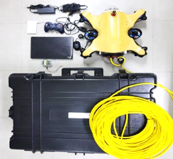

ROV(수중원격작동로봇)
원격으로 조정되는 심해자원 탐사 및 수중 물체 조사를 위해 사용되는 무인 잠수정이다. 자체 추진력을 가지고 있으며 모선에 장착된 컨트롤러를 통해 원격으로 제어가 가능하여 사람이 작업하기 힘든 해저 환경에서 해저 자원의 탐사, 침몰된 선박의 위치 및 상태 파악 등에 활용된다.
주요 기능
· 수직 상승, 하강, 직선, 대각 주행 가능
· 최대속도 1.2 m/s
· 수심 고정모드
· 2 LED Light 장착
· 수심, 온도센서 장착
· 누수 경보
· 수중 소음 측정
· 노트북을 이용한 원격제어 및 영상 저장
